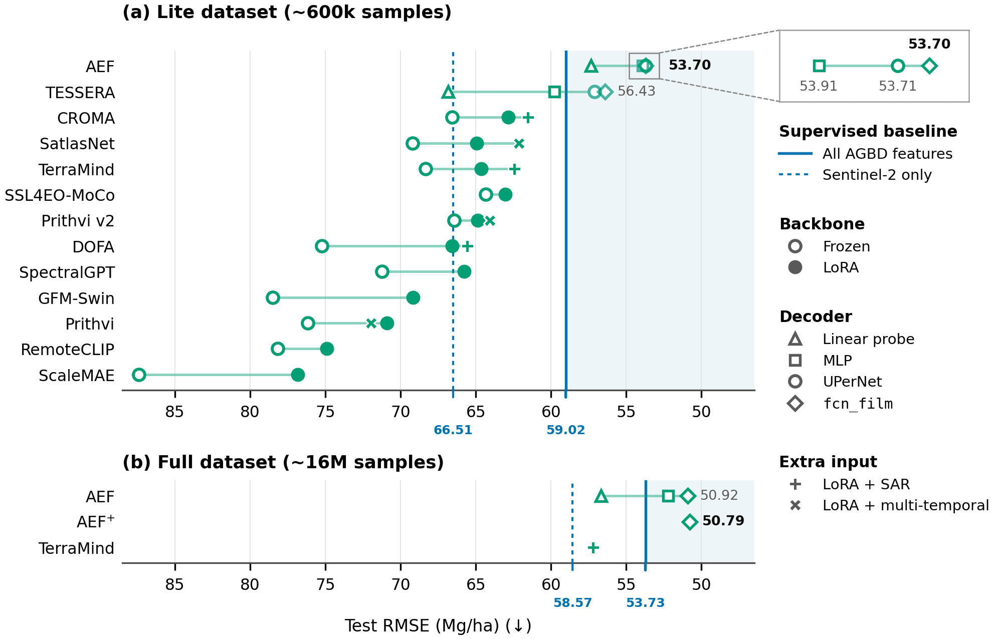
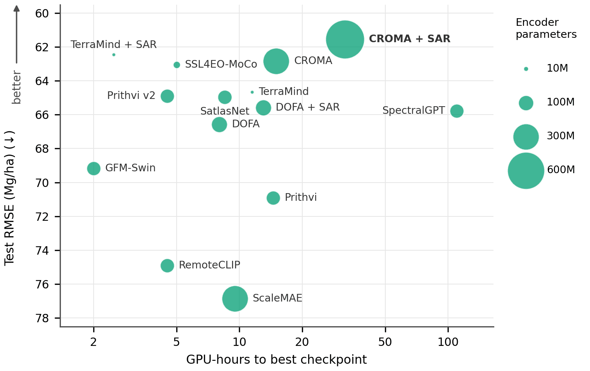
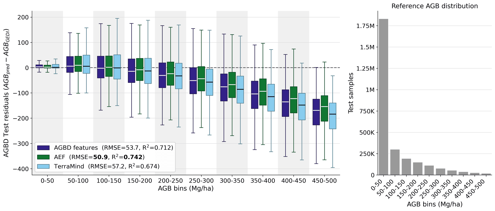
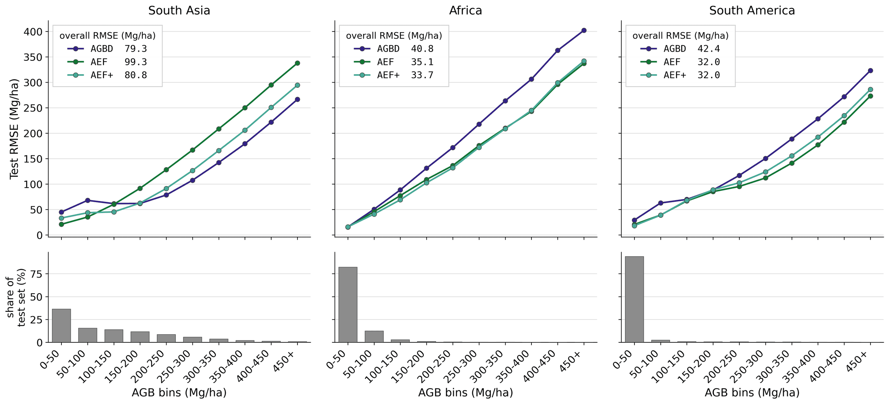
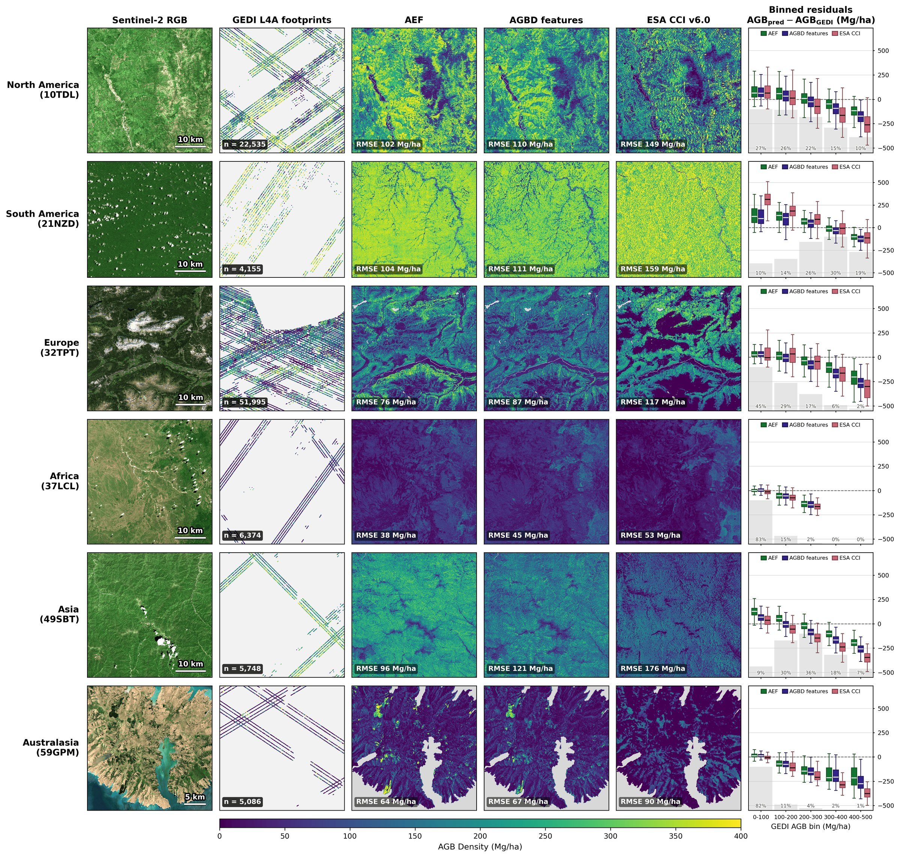
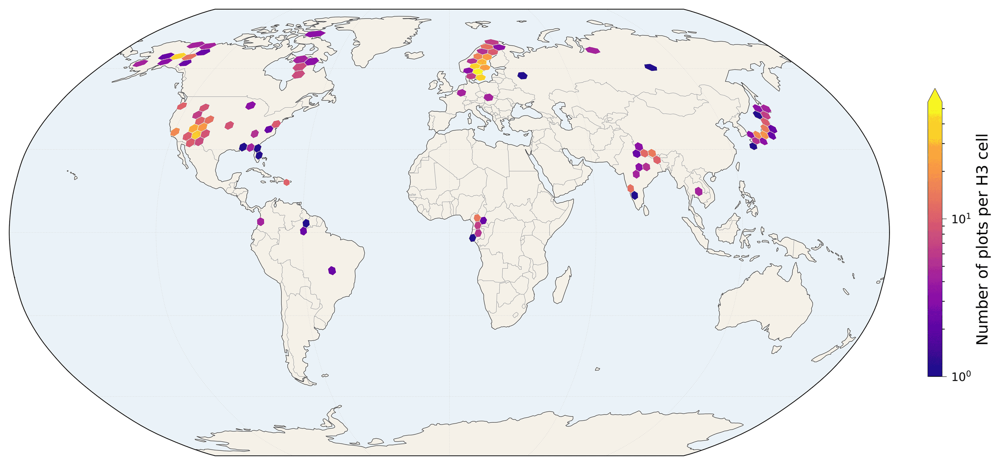
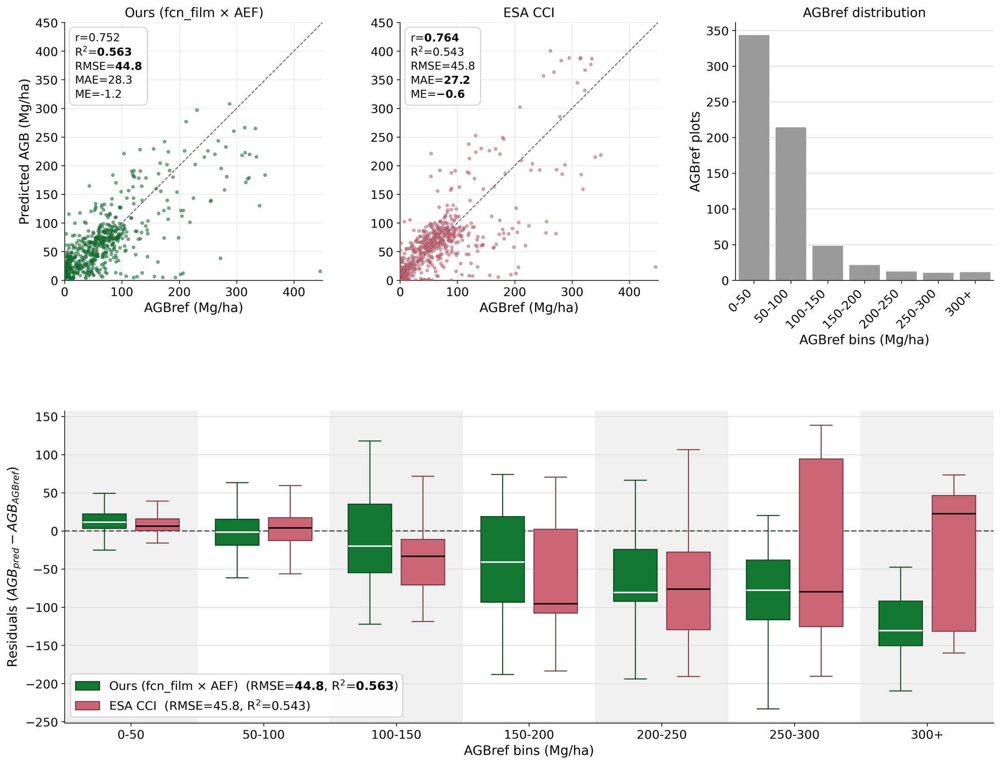

Accurate estimation of above-ground biomass (AGB) from satellite imagery is essential for the large-scale monitoring of carbon stocks, yet it remains a challenging regression task at global scale. Geospatial Foundation Models (GFMs) have recently emerged as a promising machine learning paradigm to derive general-purpose representations from Earth observation (EO) data, but their utility for quantitative regression tasks like biomass estimation remains largely unexplored, as most benchmarks focus on classification and segmentation. Here, we benchmark 13 GFMs for above-ground biomass estimation, specifically GEDI L4A biomass values. We compare them against a fully supervised state-of-the-art (SOTA) baseline trained on A Global-scale Biomass Dataset (AGBD), a machine learning-ready benchmark spanning diverse biomes and geographies. Most of the GFMs evaluated substantially underperform with respect to the supervised baseline, whether frozen or fine-tuned; only TESSERA and AlphaEarth Foundations (AEF) features with certain prediction heads yield a better performance. Overall, our SOTA model trained on AEF embeddings and selected raw EO features achieves the best overall result (an RMSE of 50.79 Mg/ha vs. 53.73 Mg/ha on AGBD features). This feature combination also generalizes better than AGBD features: it reduces RMSE by up to 25% in selected regions excluded from training, and, trained on single-year data alone, it outperforms the model trained on multi-year AGBD features. With labels from only 11 regions around the world, the AEF-based model also performs on par with the globally calibrated ESA CCI biomass product on independent reference plots (RMSE 44.79 Mg/ha vs. 45.77 Mg/ha). These findings indicate that GFM features can be highly informative for biomass estimation, when the underlying model is trained on rich multi-modal data. Distributed as accessible embedding layers, they lower the computational barrier to state-of-the-art biomass estimation for practitioners.
Only AEF and TESSERA, which summarize a full year of multi-modal observations per pixel, beat the supervised baseline on AGBD Lite (53.70 and 56.43 vs. 59.02 Mg/ha). The other 11 GFMs fall short, frozen or fine-tuned with LoRA: the best, CROMA (+SAR), reaches 61.56 Mg/ha.
fcn_film on AEF+ reaches 50.79 Mg/ha vs. 53.73 on AGBD features.
Even an MLP on AEF (52.22) beats the supervised baseline and the fine-tuned TerraMind (+SAR) model (57.21).
AEF-based models reduce RMSE by up to 25% in regions held out from training, and, trained on 2019 data alone, they beat AGBD features trained on both years.
With labels from only 11 regions, the AEF-based model matches the globally calibrated ESA CCI product on independent AGBref plots (RMSE 44.79 vs. 45.77 Mg/ha).
We first compare all 13 GFMs on AGBD Lite (≈600k samples), each with a UPerNet head, against the supervised
fcn_film baseline. AEF and TESSERA are the only GFMs that beat the baseline trained on all AGBD
features (53.70 and 56.43 vs. 59.02 Mg/ha). With all encoders frozen, they have 17–39% and 11–35%
lower RMSE than the other 11 GFMs; of those, only SSL4EO-MoCo (64.34 Mg/ha) improves on the Sentinel-2-only
baseline (66.51 Mg/ha).
Fine-tuning with LoRA improves every encoder, most of all those whose frozen features performed worst, and 6 of the 11 then beat the Sentinel-2-only baseline. Adding L-band SAR (CROMA, TerraMind, DOFA) or multi-temporal Sentinel-2 (SatlasNet, Prithvi, Prithvi v2) helps further, but less than fine-tuning itself. The best fine-tuned configuration, CROMA (+SAR) at 61.56 Mg/ha, still trails AEF, TESSERA and the multi-modal supervised baseline.

Figure 1. Test RMSE (Mg/ha, inverted axis). Blue lines mark the supervised
fcn_film baseline trained on all AGBD features (solid) or on Sentinel-2 only (dashed); the shaded area marks
results better than the baseline on all AGBD features. (a) AGBD Lite: GFMs with a UPerNet head on a frozen or LoRA-adapted
encoder, optionally with L-band SAR (+) or multi-temporal Sentinel-2 (×) input; AEF and TESSERA are also shown with a
linear probe (△), an MLP (□) and fcn_film (◇). (b) AGBD Full: AEF and AEF+
(AEF plus land cover, slope, aspect and encoded coordinates) with various heads, and TerraMind (+SAR, LoRA, UPerNet head).
| GFM | frozen | LoRA |
|---|---|---|
| AEF | 53.71 | — |
| TESSERA | 57.12 | — |
| SSL4EO-MoCo | 64.34 | 63.05 |
| Prithvi | 76.17 | 70.91 |
| +MT | — | 71.98 |
| Prithvi v2 | 66.43 | 64.89 |
| +MT | — | 64.08 |
| CROMA | 66.57 | 62.83 |
| +SAR | — | 61.56 |
| TerraMind | 68.33 | 64.66 |
| +SAR | — | 62.45 |
| SatlasNet | 69.20 | 64.96 |
| +MT | — | 62.14 |
| SpectralGPT | 71.23 | 65.77 |
| DOFA | 75.24 | 66.57 |
| +SAR | — | 65.58 |
| RemoteCLIP | 78.17 | 74.91 |
| GFM-Swin | 78.52 | 69.17 |
| ScaleMAE | 87.39 | 76.85 |
Table 1. Test RMSE (Mg/ha, ↓) on AGBD Lite, UPerNet head on a frozen or LoRA-adapted encoder. +SAR: with L-band ALOS PALSAR-2 input; +MT: with three Sentinel-2 dates. AEF and TESSERA are pre-computed embeddings, so only the head is trained. Best per column in bold, second best underlined.
| Features | LP | MLP | fcn_film |
|---|---|---|---|
| S2 | — | — | 66.51 ± 0.04 |
| AGBD | — | — | 59.02 ± 0.05 |
| AEF | 57.34 ± 0.01 | 53.91 ± 0.02 | 53.70 ± 0.04 |
| TESSERA | 66.86 ± 0.06 | 59.79 ± 0.09 | 56.43 ± 0.02 |
Table 2. Test RMSE (Mg/ha, ↓) on AGBD Lite with lighter heads: linear probe (LP), MLP and
fcn_film, on Sentinel-2 bands only (S2), all AGBD features, or AEF and TESSERA embeddings. Mean ± std over
three runs. Best in bold, second best underlined.
With a per-pixel MLP, AEF reaches 53.91 Mg/ha, and even a linear probe on AEF (57.34) beats the supervised baseline. TESSERA depends more on the head: it encodes each pixel's time series independently, so it only beats the baseline with heads that add spatial context.

Figure 2. GPU-hours until the best checkpoint (log scale, NVIDIA GeForce RTX 4090) against test RMSE (inverted axis) for each GFM fine-tuned with LoRA and a UPerNet head on AGBD Lite; +SAR denotes added L-band SAR input. Marker area is proportional to the number of encoder parameters. TerraMind (+SAR) comes within 1 Mg/ha of CROMA (+SAR) in 2.5 GPU-hours instead of roughly 32.
On AGBD Full (≈16M samples), AEF keeps its lead. An MLP on AEF already beats the supervised baseline,
fcn_film on AEF lowers the error to 50.92 Mg/ha, and adding a few ancillary features (AEF+)
gives the best result overall. TerraMind (+SAR), chosen because it nearly matches CROMA (+SAR) at about a tenth of the
compute, still trails AEF when trained on the full dataset.
| Model | Features | RMSE (↓) |
|---|---|---|
| Supervised baseline | ||
fcn_film | S2 | 58.57 ± 0.03 |
fcn_film | AGBD | 53.73 ± 0.02 |
| GFMs | ||
| LP | AEF | 56.67 ± 0.01 |
| MLP | AEF | 52.22 ± 0.02 |
fcn_film | AEF | 50.92 ± 0.02 |
fcn_film | AEF+ | 50.79 ± 0.01 |
| TerraMind (LoRA, UPerNet) | S2 + SAR | 57.21 |
Table 3. Test RMSE (Mg/ha, ↓) on AGBD Full. AEF+: AEF plus land cover, slope, aspect and encoded coordinates. Mean ± std over three runs, except TerraMind (single run). Best in bold, second best underlined.

Figure 3. Test residuals (predicted − reference AGB, Mg/ha) on AGBD Full,
for fcn_film on AGBD features (purple) and on AEF embeddings (green), and TerraMind (+SAR) (LoRA, UPerNet head;
light blue). Left: residuals per 50 Mg/ha bin of reference AGB (boxes: median and interquartile range; whiskers:
1.5×IQR; outliers not shown); the legend gives each model's overall RMSE and R². Right: number of test samples
per bin. Beyond 200 Mg/ha all models increasingly underestimate biomass, AEF the least.
AEF embeddings do not just improve average accuracy; they also change how models behave when training and test data differ. When the target region is excluded from training (cross-region), AEF and AEF+ reduce RMSE by 14–25% in Africa and South America. This transfer is not unconditional: in South Asia, AEF alone is 25% worse than raw AGBD features, while AEF+ stays on par with them.
| Region | Features | cross-region | within-region | general |
|---|---|---|---|---|
| Africa | AGBD | 40.79 | 31.42 | 31.47 |
| AEF | 35.08 | 29.17 | 29.21 | |
| AEF+ | 33.72 | 29.13 | 29.24 | |
| South Asia | AGBD | 79.28 | 77.17 | 73.65 |
| AEF | 99.34 | 69.44 | 69.75 | |
| AEF+ | 80.85 | 69.50 | 70.49 | |
| South America | AGBD | 42.40 | 28.85 | 27.77 |
| AEF | 32.05 | 25.62 | 25.61 | |
| AEF+ | 32.02 | 25.56 | 25.62 |
Table 4. Geographical generalization: test RMSE (Mg/ha, ↓) of fcn_film trained on
AGBD Full with AGBD features, AEF or AEF+, evaluated on the target region. cross-region: trained without the
target region; within-region: trained only on it; general: trained on all regions. Best per region and protocol
in bold, second underlined.

Figure 4. Test RMSE by AGB bin under the cross-region protocol, for
fcn_film on AGBD features (purple), AEF (green) and AEF+ (light blue). Each column is one target
region, scored by a model trained without any data from that region. Top: RMSE per 50 Mg/ha bin of reference AGB
(legend: overall RMSE). Bottom: share of the region's test footprints per bin. In South Asia, AEF's deficit is confined to
high biomass.
Over time, AEF and AEF+ are more stable than raw spectral features: with a one-year gap between training and test data, AGBD features degrade sharply, while models trained on 2019 AEF embeddings alone still beat AGBD features trained on both years.
| Features | all years | cross-year | within-year |
|---|---|---|---|
| AGBD | 53.29 | 59.12 | 52.20 |
| AEF | 50.64 | 52.23 | 51.05 |
| AEF+ | 50.52 | 52.52 | 50.92 |
Table 5. Temporal generalization: test RMSE (Mg/ha, ↓) on the 2020 AGBD test samples for
fcn_film trained on all years (2019 and 2020), cross-year (2019 only) or within-year (2020 only).
Best per column in bold, second underlined.
We generate wall-to-wall AGB maps on zoomed-in windows of six Sentinel-2 tiles spanning distinct biomes and
hemispheres, with fcn_film on AEF embeddings and on AGBD features, and compare them with the ESA CCI v6.0
product. Scored against the GEDI L4A footprints inside each window, the AEF-based model has the lowest error on all
six tiles. Its maps follow terrain and vegetation structure while staying smooth over homogeneous cover; the
AGBD-features baseline shows the same large-scale patterns with more small-scale noise, and the coarser ESA CCI
(100 m) diverges most from GEDI.
| Map | N. America | S. America | Europe | Africa | Asia | Australasia |
|---|---|---|---|---|---|---|
fcn_film on AEF | 102 | 104 | 76 | 38 | 96 | 64 |
fcn_film on AGBD features | 110 | 111 | 87 | 45 | 121 | 67 |
| ESA CCI v6.0 | 149 | 159 | 117 | 53 | 176 | 90 |
Table 6. RMSE (Mg/ha, ↓) of each map against the GEDI L4A footprints inside the window. Tiles: 10TDL (Six Rivers National Forest, USA), 21NZD (Maripasoula, French Guiana), 32TPT (Tyrol, Austria), 37LCL (Selous Game Reserve, Tanzania), 49SBT (Qinling, China), 59GPM (Banks Peninsula, New Zealand). Best per tile in bold.

Figure 5. Predicted AGB maps on six windows (rows). Columns: Sentinel-2
true-color composite; GEDI L4A footprints; fcn_film on AEF embeddings; fcn_film on AGBD features
(supervised baseline); ESA CCI v6.0 (100 m); residuals (predicted − GEDI, Mg/ha) per GEDI AGB bin. RMSE in each
panel is computed against the GEDI footprints in the window. Color scale: AGB (Mg/ha).
To test performance beyond the AGBD test set, we evaluate our fcn_film model on AEF and the operational
ESA CCI biomass map on AGBref, an independent global reference dataset built from national forest inventories, research
plots and airborne LiDAR, at 10 km resolution. Although our model is trained on only the 11 AGBD regions, it
performs on par with the globally calibrated ESA CCI product in R², r and RMSE. ESA CCI has a slightly lower
MAE, and the two trade places on bias, which remains small for both.
| Plots | Model | R² | r | RMSE | MAE | ME |
|---|---|---|---|---|---|---|
| All | fcn_film on AEF | 0.563 | 0.752 | 44.79 | 28.31 | −1.18 |
| ESA CCI v6.0 | 0.543 | 0.764 | 45.77 | 27.20 | −0.60 | |
| Subset | fcn_film on AEF | 0.696 | 0.837 | 34.32 | 24.18 | 4.42 |
| ESA CCI v6.0 | 0.687 | 0.862 | 34.83 | 22.13 | 4.72 |
Table 7. Evaluation against AGBref reference plots, after aggregating both maps to AGBref's 10 km cells. All: all plots except Japan; Subset: plots within 1500 km of an AGBD sample. R²: coefficient of determination; r: Pearson correlation; RMSE, MAE and ME (mean error, predicted − reference) in Mg/ha. Best per column in bold.

Figure 6. Spatial distribution of the AGBref plots used for independent validation (Robinson projection, H3 hexagonal grid with ≈86 km² per cell). Color: number of plots per cell (log scale).

Figure 7. Predicted AGB against AGBref reference values aggregated to 10 km cells,
for fcn_film on AEF (green) and ESA CCI v6.0 (red), on all plots. Top: per-plot scatter with the 1:1 line (dashed),
and the distribution of AGBref values (right). Bottom: residuals (predicted − reference, Mg/ha) per AGBref bin. Both
underestimate at high biomass; between 100 and 250 Mg/ha our model stays closer to zero with a smaller spread.
The decisive property of a GFM for biomass estimation is the information its representation encodes. AEF and TESSERA distill a full year of multi-modal observations per pixel; most other GFMs see a single, mostly optical acquisition, and fine-tuning cannot supply the information that is missing. When the representation is rich enough, a lightweight head suffices: an MLP on AEF embeddings beats the supervised state of the art at a fraction of the cost, since the embeddings are pre-computed and no GPU-intensive feature extraction is needed.
Pre-computed embeddings come with constraints. Their producer fixes the input sensors, the temporal aggregation and the spatial resolution, and since AEF's weights are not released, its embeddings cannot be fine-tuned or generated for other time periods. TESSERA, the second-best GFM in our benchmark, releases both its weights and its embeddings, offering an open alternative.
@misc{https://doi.org/10.48550/arxiv.2608.04792,
doi = {10.48550/ARXIV.2608.04792},
url = {https://arxiv.org/abs/2608.04792},
author = {Sialelli, Ghjulia and Scheibenreif, Linus and Wegner, Jan Dirk and Schindler, Konrad},
title = {Above-ground Biomass Estimation with Geospatial Foundation Models},
publisher = {arXiv},
year = {2026}
}